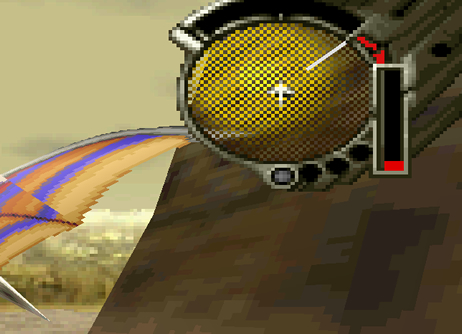

Things You Should Know Before Playing PDS
| Optional NPC Dialogue: Using the Blue (Far) Cursor When talking to characters/npcs you will notice two different types of cursors: one yellow for up close and one blue for when you are far away. What you might not know is: you can actually listen to optional dialogue between any two npcs. All you have to do is stand far enough away from the two characters and select them with the blue (far) cursor. Each character will have something different to say, so be sure to check both of them for multiple dialoque options. There is quite a lot of hidden dialogue you can miss if you neglect to do this. And these conversations add more depth to the characters that you would otherwise miss if you failed to use this mechanic. Changing Day into Night When walking up to any main entrance you will be given the option to change day into night or vise versa. There are certain conversations you can only see at night. For example: like being able to talk to An'jou and Enkak sitting by the fire at the Caravan. |
1. The far cursor lets you listen to optional npc dialogue! |
| 2. You can change the time of day at any main entrance. |
| The Dragon's Hidden Moves: Getting the Kuo Pollen, Villatuya Fruit and the Dragoon Booster There are a few hidden moves you can add to your dragon's moveset as you progress through the game. By acquiring certain hidden items, you will be able to perform secret button funcitons and moves not explained or known to the player as stated below: Location: Garil Desert/Green Oasis/ Disc 1 Item: Kuo Pollen Item Locaiton: Found in one of the strange plants at the Green Oasis near the large ruin. Lock-on to the plant, fire a laser and you will see a strange red object pop out. Lock-on to it again to acquire the mysterious item. Function/Move: This fruit allows your dragon to maintain its momentum. While flying (holding B), press L, let go of L, then let go of B. You will now be able to fly without having to constantly hold down the B button!
Location: Georgius/Inside Shellcoof/ Disc 3 Item: Dragoon Booster Item Locaiton: Once you have acquired laser rank level 4 you should have no problem activating the four pyramids, found throughout Georgius. After you destroy a pyramid, energy spheres will enter the back of the ship. The spheres are unlocking doors within Shellcoof. Once all four pyramids are destroyed, the spheres pull you towards Shellcoof's entrance. So go inside. As you near the end of the corridor make sure not to miss the Blast Chip X 1 and Dragoon Booster X 1, that can be found on the left and right walls, just before the last green door. Function/Move: The Dragoon Booster has a special ability. When in movement and in the vicinity of multiple item containers or objects, if you perform a roll by pressing R, then immediately press A to activate your lock-on cursor. The dragon will lock-on to all surrounding targets at once instead of just one.
Location: Forest of Zoah/ Disc 4 Item: Villatuya Fruit Item Locaiton: After having defeated the Infested Grig Orig near the end of Disc 4, return to the Forest of Zoah. The Villatuya Fruit is found due north from where you begin, on a large patch of vegetation. Lock-on to the blue plant and acquire the strange fruit. The exact location of the Villatuya Fruit can be found on this map. Function/Move: When flying, press the R button to perform a roll, your speed will increase to its maximum velocity!
|
1. The Kuo Pollen lets your dragon fly by itself without having to hold down the B button! |
2. The Dragoon Booster lets you lock-on to multiple items at once! |
|
2. The Villatuya Fruit lets your dragon fly at its maximum speed after doing a roll! |

| Changing the Time of Day in Uru There is one location within the game where you can actually change the time of day! In Uru if you leave and re-enter the map you can change the time of day from: daytime, sunset and nighttime. This mechanic actually has a function on Disc 2 and 3, because you can only fight the Neo-Stryder and Neo-Stalker enemies on Disc 2 during sunset and the Kolba enemies on Disc 3 during the day. |
1. Enter Uru during the day. |
2. Enter Uru during dusk. |
3. Enter Uru at night. |
|
5. Within Uru, the Neo-Stryder and Neo-Stalker enemies can only be fought at sunset. Special Thanks to forum member Delta for reminding me about this! |
4. Within Uru, the Kolba enemies can only be fought during the day on Disc 3. |

| Interacting with the Environment Throughout the game you can use the cursor to select and examine multiple objects within the environment. For instance: at the start of the game inside the ruins, there is a dragon crest on the wall which you can select and read information about. Another example would be the Town of Zoah. You can select a giant windmill hanging above the town and it will spin, displaying some dialogue. Aside from examining objects, you can also receive items from examining objects. For instance in the Holy District, if you examine what looks like a stack of hanging objects, you will receive Zal Nuts or Zoah Harvest. So, keep a lookout for information on this in the main walkthough! |
1. You can interact with certain objects and creatures in the environments! |
2. Same can be said for the caravans and villages. |
3. Examining certain objects within villages with net you items! |
| 4. Examine anything and everything you see! |
| Enemy Item Drop Criteria Normal enemies, sub-bosses and bosses, usually have two items you can receive after fighting them. What players might not realize is: your battle rank (Great or Excellent) determines which of these items you get. For instance: against Bosses you will *always* get one of two items, determined by your rank. A "Great" rank will get you the fist lesser item drop, but an "Excellent", the highest ranking, will get you the second more prized item on their drop list. With normal enemies and sub-bosses, the criteria is different. Even with a Great or Excellent ranking you still may not even get an item. So, your chances regardless of your rank are completely random. And getting a rank below Great make your chances go down to zero. Special thanks to forum member Delta for confirming and testing this criteria. |
1. Your battle rank determines which item and enemy will drop. An Excellent rating on this boss will give you a highly valued Macran Jewel! |
| Telepathy Shard Item: Lets you detect enemies A lot of people who play PDS for the first time probably sold this item without a second thought. But, it actally has a function during exploration. It's directly connected to your radar in the upper right hand corner of the screen. This item allows your radar to turn yellow when you are in range of an enemy encounter. Without this item, the radar will just stay blue. |
1. The Telepathy Shard is important during exploration, don't sell it! |
2. Blue radar means your in a safe zone. But it's impossible to know this without the Telepathy Shard. |
|  3. Yellow radar means you are in a danger zone and about to get into an enemy encounter. |
| Learning Astral Phantoms Early Astral Phantoms is a special move your dragon can learn for taking good care of it in camp. What you might not know is: that's not neccessarily true. I've discovered that learning Astral Phantoms is determined by your level. The earliest you can learn the technique is at level 26 on disc 1, just before going to the Forbidden Zone. To level up fast you can fight the Sand Mites in the Garil Desert/Blue Ruins as shown below. Once you're level 26 just go to camp and pet your dragon repeatedly until you learn the technique! Special thanks to forum member Delta for helping me test out the criteria needed. |
2. The earliest you can learn this move is on Disc 1 right before going to the Forbidden Zone. |
|
3. After leveling up to 26 (see Sand Mites below), pet your dragon multiple times by leaving and re-entering camp and you will learn the hidden berserk technique! |
4. The easiest way to level up to 26 is in the Blue Ruins found within the Garil Desert. |
|
5. The quickest way to get into battle with them is in sections 3 and 4 on the map. Just fly around in circles until you enter the battle. |


| How to Acquire the Aronak Unit and get Free Dynes with a Panzer Dragoon 2 Zwei Save File Before you start playing Panzer Dragoon Saga, be sure to have a Panzer Dragoon 2 Zwei save file, on your Saturn's Internal Memory. Having this file will allow you to get an item called the Aronak Unit, later in the game. Also, depending on how long you've played Panzer Dragoon 2 Zwei, when you begin Panzer Dragoon Saga, you will start out with a certain number of Dynes (Panzer Dragoon Saga's form of money). |
|
1. Make sure you have a Panzer Dragoon 2 Zwei save file, on your Saturn's Interal Memory, before playing Panzer Dragoon Saga. |
| 2. Having this file on the Saturn's Internal Memory, will make it possible for you to recieve an item called the Aronak Unit, later in the game. |
|
3. Also, depending on how long you've played Panzer Dragoon 2 Zwei, you will start Panzer Dragoon Saga, with a certain amount of Dynes. |
| How to Unlock Pandra's Box in Panzer Dragoon 2 Zwei Instantly with a Panzer Dragoon Saga Save File With a Panzer Dragoon Saga Save file on your Saturn's Internal Memory, you can unlock Pandra's Box instantly, in Panzer Dragoon 2 Zwei. It certainly beats unlocking it the hard way! |
| 1. Having a Panzer Dragoon Saga save file, on your Saturn's Internal Memory, will allow you to unlock Pandra's Box in Panzer Dragoon 2 Zwei, instantly! |
| Editing the Color of Defeated Enemies While in the player menu, you can view data on enemies you've defeated. When viewing a certain enemy, press start on controller 2. Another menu will appear on the right hand side. By pressing X, Y, Z, A, B, C, L or R, you can edit the color of the enemy you're currently viewing. |
|
1. While viewing a defeated enemy, press start on controller 2, to bring up a right hand menu. Also on controller 2, if you press X, Y, Z, A, B, C, L, or R, you can change the enemies color. |

| Clear the End of Disc Text When you get to the end of disc 1, 2, or 3, of Panzer Dragoon Saga, you will be prompted to insert the next disc. If you hold X, Y, and Z together, you can clear the text away. This allows you to view the nice artwork in the background. |
|
1. Hold X, Y, and Z together, to clear the end disc text. |

| Speed Up or Slow Down Game Dialogue and Voices During in game conversations or when talking to towns people, hold L to speed up game dialogue and voices, and hold R to slow down game dialogue and voices. This is good for a few laughs at most! |
|
1. Hold L, to speed up game dialogue and voices, Hold R, to slow down game dialogue and voices. Be prepared to laugh! |

| Rotating the World Map While on the World Map, you can rotate it by pressing L or R, on the Saturn Controller. |
|
1. Press L or R to rotate the World Map. |
| View Panzer Dragoon's Opening Movie and Unlock "8th" and "Special" Episodes in Panzer Dragoon 2 Zwei First, when at the title screen of Panzer Dragoon Saga, do a soft reset (hold A, B, C, and press Start). You will then be taken to the Saturn's system configuration screen. Second, without shutting the system off, open the lid and take Panzer Dragoon Saga out, replace it with Panzer Dragoon 2 Zwei, and close the lid. Lastly, select "Start Application", and Panzer Dragoon 2 Zwei, will load. The opening movie of the game, will now be replaced with Panzer Dragoon's opening movie (weird). Also, you will unlock the "8th" and "Special" episodes in Pandra's Box. These are both test episodes. Awkwardly, you will be forced to play the "Special" episode, on a small screen, in the middle of your TV. |
| 1. When at Panzer Dragoon Saga's title screen, do a soft reset (hold A, B, C, and press start). |
|
2. You will then be brought to the Saturn's system configuration screen. Without shutting off the system, open the lid, take out Saga, replace it with Panzer Dragoon 2 Zwei, and close the lid. Now, select "Start Application", and the game will load. |
|
3. You will then see Panzer Dragoon's opening movie, instead of Zwei's opening. |
| 4. Also, you will unlock two new episodes called "8th" and "Special" (both test episodes) , in Pandra's Box. |
|
5. Unfortunately, you will have to play the episode called "Special", within a tiny screen in the middle of your TV! |